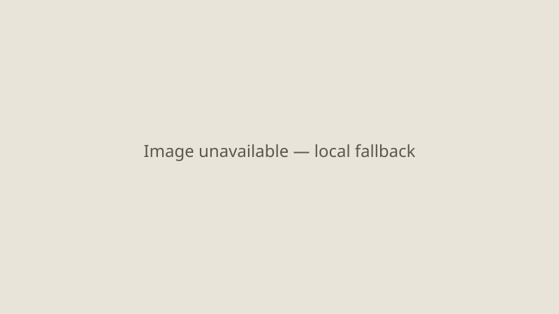

Washington · monetary policy · 16 September 2026
The Federal Open Market Committee is expected to raise the federal funds rate for the first time since 2023.

What is agreed across desks
The Federal Open Market Committee meets on 15–16 September 2026. Market pricing via CME FedWatch tools indicated probabilities above 90 percent for a 25-basis-point increase in the target range for the federal funds rate, moving it from 3.50–3.75 percent to 3.75–4.00 percent. Such a move would be the first increase since July 2023. The decision is scheduled for release at approximately 14:00 Eastern Time, followed by a press conference with Chair Kevin Warsh.
Recent inflation readings remained above the Committee’s 2 percent longer-run goal. Energy prices have been elevated in connection with disruptions associated with the Iran conflict. Chair Warsh has publicly stated that price stability is the central bank’s responsibility and that recent data did not yet show underlying trends improving sufficiently. The Summary of Economic Projections and the accompanying “dot plot” will also be released.
What is only a quote or market inference
Statements that a hike is “all but guaranteed” or that any particular path of future rates is certain are market inferences or journalistic summaries, not official Committee decisions. The actual vote, any dissents, and the precise language of the statement remain unknown until the release.
Mechanism and context
The federal funds rate is the interest rate at which depository institutions lend reserve balances to each other overnight. The FOMC sets a target range and implements policy primarily through interest on reserve balances and open-market operations. Raising the target is intended to tighten financial conditions, slow demand, and thereby reduce inflationary pressure. The Committee’s dual mandate is maximum employment and price stability. Since mid-2023 the Committee had been reducing the rate; a reversal would signal that inflation risks are judged to require renewed tightening.
Energy-price shocks from the Iran theater complicate the picture because they can raise measured inflation even while demand-side pressures may be moderating. The CBO and private analysts have noted potential contributions to inflation from the conflict into 2027. The Committee’s own projections will show how members currently assess the path of inflation, unemployment, and the appropriate rate.
What this story is not
It is not a prediction of the final vote. It is not an evaluation of whether the expected move is correct or incorrect. It is not a claim that the rate change will immediately alter consumer prices or mortgage rates by a fixed amount. Secondary effects on financial markets and the real economy will be measured after the fact.

Source articles and scores
| Outlet | Headline | T | N | C |
|---|---|---|---|---|
| CNBC | The Federal Reserve is expected to hike rates for the first time in three years | 90 | 0 | 95 |
| Federal Reserve | Board calendar and meeting schedule | 100 | 0 | 100 |
| Reuters | Warsh's words may matter more than the anticipated Fed rate hike | 92 | 0 | 98 |
Images: Wikimedia Commons location photograph. onerror to committed SVG.